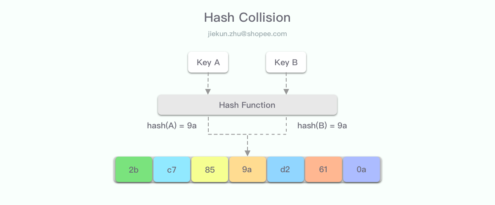

Paper Reading：HotRing——哈希冲突中热点数据高效读取方案
Paper Reading系列旨在分享著名Conference上发表的论文。FAST（USENIX Conference on File and Storage Technologies）是存储领域的顶会之一，第18届FAST于美国Santa Clara举行。
关于Paper
《HotRing: A Hotsport-Aware In-Memory Key-Value Store》发表于2020年，主要研究的是使用链表结构解决哈希冲突时，访问热点数据存在一定额外开销的问题。论文提出的HotRing结构支持热点数据发现，并且可通过使环状链表的头部指针指向hot item，减少读取所需遍历的路径，达到提升访问效率的目的。
Hash Collision简介
当我们使用哈希表时，不可避免地会存在哈希冲突。我们将大量数据通过计算哈希值的方式放入相对较小的哈希表中，不同item得到的哈希值可能会是一致的。通常通过rehash扩大哈希表，可以降低哈希冲突的概率。但是哈希冲突仍然存在，也需要有对应的方法在出现冲突时让数据仍能正确读取到。

Collision解决方案
当出现不同的item具有相同哈希值时，需要有合适的位置来存放多个item。这些item可以被安插在同一张哈希表的不同位置，也可以被放到哈希表之外的空间，而让哈希表保存外部空间的地址值。
Open Addressing
开放地址法是将冲突的item放在哈希表内的方案。使用开放地址法时，查找对应item的操作称为探测（Probing）。当期望写入的哈希位置已经存在其他item B时，可以将item A放至：
- 相邻的空位——线性探测
- 间隔1、4、9、16的空位——平方探测
- 另一个的Hash方法计算的空位——二次哈希
开放地址法的查询终止条件为：探测到对应item或探测到空位。当探测到非目标item时，目标item可能在下一个位置，也可能不存在，因此需要继续探测。开放地址法要求哈希表比数据集更大，当负载因子处于高位时，对于冲突item的查询，遍历路径则会变得相对长，性能也会因此下降。因此开放地址法需要相当大的空间来存放哈希表。
Collision Chain
链表法将item存储在哈希表之外，每个哈希桶存放有指向链表头部的指针，通过顺序遍历链表确认查找的item是否存在。
与开放地址法相比，链表法可以允许item数量大于哈希表。在负载因子增长的情况下，开放地址法的探测速度会显著变慢，而链表法仍能保持查询效率与长度挂钩地线性增长。

HotRing
在实际使用场景中，经常会有大量item被放入哈希表，而其中只有极少数是热点数据。
对于链表法的热点数据的访问，简化模型下需要查找的次数为：
T = 1 + L / 2
= 1 + (N / B) / 2
其中L代表哈希桶对应的链表长度，N为总item数，B为哈希桶数量。
如果可以让热点数据长期位于链表头部，访问的复杂度就可以贴近O(1)。但是对单链表的item位置调整，也就是类似于LRU/LFU的实现，操作上开销不低，并且实际上除了极少数hot item的位置，其余item的顺序其实并没有那么重要。设计一种代替链表的、贴合缓存使用场景的数据结构，通常会期望：
- 能加速热点item的访问
- 能及时发现热点
- 能以较低的额外开销将热点移至便于访问的位置
- 能支持并发场景下操作
- 高效率Rehash
- …
针对这类场景和需求，HotRing结构应运而生。
设计概览
HotRing是一个环状的链表结构。在加速热点数据的访问上，HotRing让哈希表中的头指针始终指向hot item或能高效访问多个hot item的位置。比起调整链表中item位置，修改头指针更加高效简洁。为了能够发现热点数据，每个item也需要能够存储相关的统计信息，例如访问次数。通过额外的后台线程来分析统计值，可以在热点发生变化时及时对头指针进行调整。
具体实现
数据查找
若环状链表数据没有任何顺序，确认item不存在的复杂度为O(n)，从时间效率上看可以再优化。HotRing选择在写入时略微增加开销，让环状链表保持顺序性，从而查找时就能更快定位或结束遍历。
对于目标元素item(k)结束查找的标志可以是：
- item存在，则满足：
item(k) = item(i)
- 若不满足上式，且满足下列任一条件时，说明item不存在：
item(i-1) < item(k) < item(i) 或
item(k) < item(i) < item(i-1) 或
item(i) < item(i-1) < item(k)
而为了减少对字符串的字典序比较，HotRing为每个item都增加了一个tag，即item(k) = (tag(k), key(k))。
通过这种设计，无需遍历链表中所有元素即可提前终止遍历，平均情况下查找item数可以达到(n/2) + 1。实际上，因为头部指针位置的优化，大多数查找能够更早定位到hot item而结束。
热点发现
实际场景中，由于hot item一直在变，因此需要能准确、及时发现hot item的机制，我们也可以从这两个方面来定性评定发现算法的优劣：
- 准确性：头指针指向hot item的比例
- 及时性：多少延迟之后头指针可以指向hot item
HotRing设计了两种方案来实现热点发现，分别是随机策略和统计样本策略。
随机策略非常简单，HotRing周期性地将头指针指向本次查询到的item。默认周期为5，即每5次查询到item时，若头指针已经指向该item，则不发生调整；否则将头指针指向item。这个方案巧妙之处在于，hot item的访问概率远大于cold item，利用这点,无需任何统计信息即可实现热点发现。
当然，这个方案在环中存在多个hot item时表现并不好，同时准确率也比另一种策略要低。另外，当整体系统压力较小、热点分散的情景下，随机策略的准确性也会进一步降低，头指针需要频繁发生变更。因此我们还需要另一种能够对多热点优化、准确率更高的方案。
统计样本策略，顾名思义需要一定的数据样本。HotRing的头指针带有15bit的Total Counter，而环中每个item带有14bit的Counter，Total Counter表示对该环的总命中次数，item的Counter则代表该item的命中次数。
HotRing周期性地进行样本分析，每次分析起始时，Total Counter和Counter均为0，在一定时间后，根据Total Counter和每个item的Counter值决定使用哪个item作为头节点。
如上图公式所示，ni表示item(i)采样期间的的访问次数，N代表总访问次数，(i-t) mod k代表从头节点item(t)出发访问到item(i)所需遍历的长度，因此Wt即为该环状链表遍历长度的加权平均值，该值越小说明头节点的选择越优异。
统计样本策略更加准确，同时也能使用于多个hot item的场景，但是经常进行分析也会有一定的开销。因此，优化的周期策略是每隔R次查询时先判断本次fetch到的item是否为头指针指向的item，若是，则hot item很可能没有发生变化；反之则有必要发起新的一轮样本统计。
热点继承是指hot item发生变更时应该如何处理。HotRing使用的思路也非常简单，如果头节点发生了更新，最近更新的item理应有更大可能性被读取到，因此头指针直接指向这个新的item；而当头节点被删除时，头指针直接指向下一个item，后续依赖热点发现的策略作进一步调整。
无锁Rehash
当哈希表需要扩容时，由于哈希槽的增加，环状链表也需要将item分配到新的环中。和传统的rehash不同，HotRing决定rehash的条件是查找所需的平均内存访问次数，而非哈希表负载因子，这种方案能够和hot item分布情况相结合，减少rehash次数。HotRing的rehash分为3个阶段：初始化、分裂、清理。
在初始化阶段，HotRing创建一个后台线程，这个线程会新建一个原有哈希表2倍大小的新哈希表。这里重新描述一下哈希表和tag的关系，在计算一个item的哈希值时，值的前k位用作哈希表定位，后t位作为tag。因此，当哈希表扩容2倍，需要占用k+1位哈希值，tag值则缩小为t-1位。通过这个关系，环状链表在扩容时可根据tag值一分为二：原有tag值t位，因此范围为range = 2^t，扩容后范围为2^(t-1)，因此正好可以按[0, range/2)和[range/2, range)划分为两个新的环，对应新哈希表上两个slot。
初始化线程还会创建一个rehash节点，其中包含两个子rehash item。每个rehash item有不同的tag，例如0和range/2，后续可以作为两个新环的临时头节点（最后将被清理）。在rehash时，新哈希表的对应槽上的头指针指向这两个rehash item。同时rehash item上也有对应的标志位，表示其不包含键值对，只作为rehash过程中的头节点使用。
在分裂阶段，rehash线程将两个rehash item放入环中，它们将会作为tag范围和遍历的边界，当Insert操作完成，新的哈希表就会生效。由于没有item的复制和迁移，整个过程大部分操作都是通过无锁的CAS完成的，开销会相对较低。在清理阶段之前，查找操作以新的rehash item为起点，最多需要遍历半个环。
最后清理阶段，在这个阶段，rehash线程需要确认所有的旧哈希表访问都已经结束，进而先删除旧哈希表，然后清理所有的rehash节点。要注意这个阶段，旧哈希表的访问会阻塞rehash线程进入下一步操作，但是不影响主线程进行读写。
总结
HotRing适应的场景是热点高度集中的哈希表访问。在此情形下，HotRing的设计有如下特点：
- 将热点数据排列在链表最靠前位置，缩短访问路径
- 环状链表设计，实现上一特点只需要头指针变更，无需item移动
- 结合场景特点，实现简单有效的随机策略和适应性强、路径优化更好的统计样本策略来处理热点数据、热点漂移
- 使用原子的CAS操作避免引入锁机制
- 巧妙的环状链表rehash思路，无数据迁移成本，rehash过程中不阻塞读写
HotRing和其他的哈希冲突解决方案相比，有多个特点是结合特定场景和数据分布而落地的，在一定条件下的测试结果表明其提升非常明显，并且热点数据大都能够在两次内存访问内检索到。其中对环状数据结构的设计及其配套的随机、采样思路对高性能的业务场景设计都有不少参考价值。
References
[1] J Chen, HotRing: A Hotspot-Aware In-Memory Key-Value Store. In FAST ‘20.